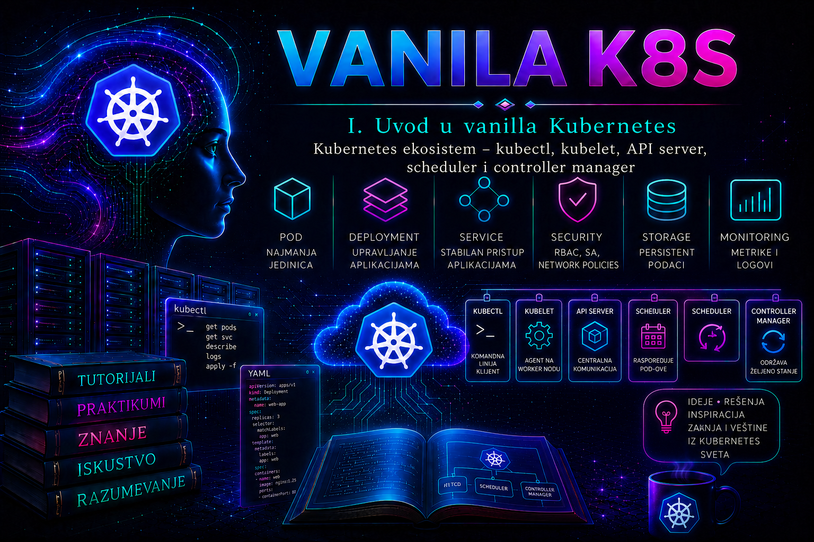

Vanilla Kubernetes

Kubernetes nije gotova infrastrukturna platforma sastavljena od jednog proizvoda, već upstream projekat koji obezbeđuje deklarativni API, kontrolne petlje i mehanizme za raspoređivanje i vođenje kontejnerizovanih radnih opterećenja. Da bi klaster zaista bio upotrebljiv, jezgro se povezuje sa operativnim sistemom, container runtime-om, mrežnim i storage implementacijama, DNS-om, registry servisom, load balancer-om, identitetom, monitoringom, backup-om i drugim komponentama. Neke od njih pripadaju Kubernetes projektu, neke drugim CNCF projektima, neke vendoru ili cloud provajderu, a neke mora da obezbedi i vodi lokalni platformski tim.
Zato izraz vanilla Kubernetes ne znači „Kubernetes bez zavisnosti”, niti automatski znači minimalan, jednostavan ili produkciono spreman sistem. On u ovom tutorijalu označava rad sa upstream modelom bez skrivenog vendorskog platformskog sloja. Vrednost takvog pristupa jeste jasna vidljivost granica: administrator mora znati šta garantuje Kubernetes API, šta obezbeđuje izabrani dodatak, ko održava infrastrukturu i na kom mestu prestaje odgovornost jednog tima, a počinje odgovornost drugog.
U julu 2026. upstream projekat održava poslednje tri minor grane: 1.34, 1.35 i 1.36. Primeri su zasnovani na Kubernetes 1.36, ali se operativne odluke ne smeju donositi samo prema broju verzije API servera. Za svaki klaster proveravaju se patch nivo, version-skew pravila, podrška operativnog sistema i kernela, kao i matrice kompatibilnosti za runtime, CNI i CSI implementacije. Alpha mogućnost nije produkciona garancija; beta i stabilna mogućnost takođe zahtevaju proveru feature gate-a, konkretne implementacije i politike podrške dobavljača.
Kubernetes kao upstream projekat i CNCF ekosistem
Kubernetes je open-source projekat pod okriljem Cloud Native Computing Foundation (CNCF). Razvoj nije isto što i klasično vlasništvo jednog proizvođača: tehnički rad organizovan je kroz zajednicu, posebne interesne grupe (Special Interest Groups, SIG), radne grupe, release timove i javne procese unapređenja. Kubernetes Enhancement Proposal (KEP) dokumentuje motivaciju, dizajn, rizike, testiranje, faze sazrevanja i plan uklanjanja ili povratka značajnijih funkcionalnosti. Administrator ne mora da bude developer jezgra, ali pri uvođenju nove funkcije mora da pročita njenu dokumentaciju, stanje funkcionalnosti i relevantni KEP, umesto da mogućnost proceni samo prema postojanju YAML polja.
CNCF landscape je katalog velikog broja projekata i proizvoda, a ne preporučena lista komponenti koje treba instalirati u svaki klaster. Status projekta u CNCF-u govori o procesu i zrelosti projekta, ali ne zamenjuje tehničku procenu za konkretno okruženje. Produkcioni izbor zahteva proveru održavanja, bezbednosnog procesa, podržanih Kubernetes verzija, načina nadogradnje, migracije podataka, observability-ja, licencnih uslova, kompetencija tima i izlazne strategije.
| Pojam | Šta stvarno označava | Šta ne dokazuje |
|---|---|---|
| Upstream Kubernetes | Referentni open-source projekat, API-ji, komponente, dokumentacija i release proces | Da je konkretan sklop infrastrukture automatski produkciono podržan |
| Kubernetes distribucija | Pakovanje Kubernetes-a sa odabranim komponentama, instalacijom, lifecycle-om i podrškom | Da se svi dodaci, politike i operativni postupci podudaraju sa drugom distribucijom |
| Managed Kubernetes | Usluga u kojoj provajder vodi definisani deo platforme, često control plane | Da je korisnik oslobođen odgovornosti za workload, pristup, podatke, trošak i sve dodatke |
| Certified Kubernetes / conformance | Dokaz da proizvod za prijavljenu verziju prolazi propisani skup conformance testova | Jednake performanse, bezbednosne podrazumevane vrednosti, CNI/CSI mogućnosti, SLA ili upgrade postupak |
| CNCF projekat | Projekat prihvaćen u određeni CNCF nivo i governance proces | Da je baš taj projekat najbolji ili podržan izbor za lokalnu arhitekturu |
Granica jezgra: šta Kubernetes obezbeđuje, a šta namerno ne bira
Jezgro obezbeđuje API i osnovne kontrolne mehanizme: objekte za opis željenog stanja, kontrolnu ravan, node agenta i pravila prema kojima se stanje posmatra i usklađuje. U narednim lekcijama biće detaljno obrađeni API server, scheduler, controller manager, kubelet, etcd i kube-proxy. Za ovu lekciju važnija je granica: upstream Kubernetes namerno ne isporučuje jednu obaveznu produkcionu implementaciju Pod mreže, trajnog storage-a, spoljnog load balancer-a, registry-ja, centralnog identiteta, backup-a, SIEM-a ili kompletnog observability sistema.
Minimalno pokrenut control plane zato nije isto što i završena platforma. Kubeadm, na primer, automatizuje bootstrap određenih Kubernetes komponenti, ali ne provisionuje mašine, ne projektuje HA endpoint, ne instalira izabranu Pod mrežu, ne obezbeđuje trajni storage niti vodi dugoročni lifecycle svih dodataka. Ako nakon kubeadm init CoreDNS Podovi čekaju mrežu, to nije dokaz da je CoreDNS pokvaren: CNI zasnovana Pod mreža još nije obezbeđena.
| Sposobnost platforme | Upstream ugovor ili jezgro | Implementacija koju treba izabrati ili obezbediti | Ključni dokaz |
|---|---|---|---|
| Izvršavanje kontejnera | Kubelet i Container Runtime Interface (CRI) | CRI kompatibilan runtime, najčešće containerd ili CRI-O | Runtime socket, verzija, podržana CRI verzija i uspešan Pod sandbox |
| Pod mreža | Kubernetes mrežni model | CNI implementacija i njena konfiguracija | Node/Pod status, CNI DaemonSet i test Pod-to-Pod/DNS konektivnosti |
| Trajni volumeni | PV/PVC/StorageClass API i CSI integracija | CSI driver, backend i politike storage-a | CSIDriver/CSINode objekti, vezan PVC i test pisanja, restarta i čitanja |
| Service tipa LoadBalancer | Service API i status | Cloud controller ili druga load-balancer implementacija | Dodeljen spoljašnji endpoint i funkcionalan tok saobraćaja |
| DNS otkrivanje servisa | DNS zasnovana service discovery specifikacija | Najčešće CoreDNS kao klasterski dodatak | Spremni DNS Podovi i uspešna rezolucija iz test Poda |
| Ingress/Gateway saobraćaj | API objekti | Odgovarajući controller; kreiranje objekta samo po sebi nije data plane | Prihvaćen status, programirana ruta, TLS i end-to-end zahtev |
| Monitoring, logovi i backup | API, metrike i događaji dostupni iz pojedinih komponenti | Alati, skladišta, retencija, alarmi i procedure oporavka | Upit, alarm, zaštićena kopija i dokazani restore |
Standardni interfejsi: CRI, CNI i CSI kao ugovori, ne proizvodi
Interfejs smanjuje čvrstu vezanost jezgra za jednu implementaciju. On definiše način komunikacije i očekivano ponašanje, ali ne čini sve implementacije funkcionalno jednakim. Kompatibilnost sa interfejsom je početni uslov; produkcioni izbor zahteva zasebnu proveru mogućnosti, podrške, performansi i operativnog lifecycle-a.
- CRI je gRPC interfejs između kubelet-a i container runtime-a. Docker Engine sam po sebi nije CRI runtime, a ugrađeni dockershim uklonjen je iz Kubernetes-a 1.24. Ako se Docker Engine namerno koristi, potreban je dodatni CRI adapter kao što je
cri-dockerd; to uvodi još jednu komponentu i vlasnika lifecycle-a. Za novu vanilla laboratoriju racionalniji su direktno CRI kompatibilni runtime-i, npr. containerd ili CRI-O. - CNI definiše operacije kojima runtime mrežni plug-in priprema i uklanja mrežu za sandbox. Različite CNI implementacije mogu nuditi različite data plane tehnologije, NetworkPolicy mogućnosti, enkripciju, observability, BGP integraciju, IPAM i Windows podršku. Kubernetes API može prihvatiti NetworkPolicy, ali bez implementacije koja je sprovodi politika neće pružiti očekivanu segmentaciju.
- CSI omogućava storage dobavljačima da razvijaju drivere izvan Kubernetes repozitorijuma. CSI kompatibilnost ne odgovara na pitanja o snapshot-u, kloniranju, proširenju, topologiji, RWX režimu, enkripciji ili crash-konzistentnosti; te mogućnosti moraju biti potvrđene za driver, backend i konkretnu verziju.
Granica interfejsa je i granica dijagnostike. Ako je PVC prihvaćen u API-ju, ali provisionovanje ne uspeva, treba korelisati Kubernetes događaje sa CSI controller/node komponentama i storage backend-om. Ako Pod ima čvor, ali sandbox mreža ne nastaje, događaji i kubelet log vode ka CNI konfiguraciji i njenom data plane-u. Restartovanje API servera ne rešava kvar u eksternom storage-u ili IPAM-u i samo proširuje blast radius.
Dodaci, controller-i, operatori i proširenje API-ja
Add-on je širok operativni naziv za komponentu koja proširuje ili omogućava klastersku sposobnost. CoreDNS, metrics server, CNI implementacija, CSI driver, ingress ili Gateway controller mogu se isporučiti kao Podovi i drugi Kubernetes resursi, ali nisu zbog toga automatski deo jezgra niti pokriveni istim lifecycle-om. Njihove verzije, privilegije, konfiguracija i podaci moraju imati vlasnika.
Controller posmatra resurse i usklađuje stvarno stanje sa željenim. Operator je obrazac kojim se controllersko znanje proširuje na životni ciklus određene aplikacije ili platforme. CustomResourceDefinition (CRD) proširuje Kubernetes API novim tipom resursa, ali sama CRD šema najčešće ne obavlja operativni posao: potreban je controller koji reaguje na objekte. Brisanje CRD-a može obrisati sve pripadajuće custom resurse; zato se CRD ne uklanja kao bezazlena „konfiguraciona datoteka”. Pre promene proveravaju se finalizer-i, konverzioni webhook, stored versions, backup i vendorska procedura.
Admission webhook može validirati ili menjati zahtev pre čuvanja objekta. Time politika postaje centralna, ali webhook ulazi u kritičnu putanju API zahteva. Pogrešna konfiguracija, istekao sertifikat ili nedostupan servis mogu blokirati deployment-e; vrednost failurePolicy određuje da li se u određenom kvaru zahtev odbija ili propušta. Izbor nije univerzalan: bezbednosna kontrola visokog rizika često zahteva zatvoreno ponašanje, dok nekritična dopuna metapodataka možda zahteva pažljivo projektovano otvoreno ponašanje i alarm.
Conformance, prenosivost i verzijske granice
Kubernetes conformance testira obavezno ponašanje standardnih, stabilnih API mogućnosti za prijavljenu verziju. To je važan temelj prenosivosti workload-a i alata, ali nije sertifikat celog operativnog dizajna. Manifest koji koristi standardni Deployment i Service obično je prenosiviji od manifesta vezanog za vendorski CRD, ali stvarni rezultat i dalje zavisi od image arhitekture, admission politika, StorageClass naziva, LoadBalancer implementacije, podržanih access mode-ova, mrežnih politika, identiteta i dostupnog kapaciteta.
Stabilan API nije obećanje da će svaka vrednost i podrazumevana postavka zauvek ostati ista. Administrator prati deprecation vodiče i release napomene, proverava API-je pre nadogradnje i održava komponente unutar podržanog version-skew-a. Alpha API ili funkcionalnost može biti promenjena ili uklonjena bez uobičajene garancije kompatibilnosti; beta funkcionalnost može biti podrazumevano uključena ili isključena u zavisnosti od verzije; vendor može imati užu matricu podrške od upstream projekta.
Model deljene odgovornosti
Odgovornost se ne određuje prema tome ko je poslednji izvršio kubectl komandu, već prema ugovorenom vlasništvu nad slojem, promenom i oporavkom. U samostalno izgrađenom vanilla klasteru lokalni tim ima najširu odgovornost; u managed servisu provajder preuzima deo control plane-a, ali korisnik obično i dalje bira ili konfiguriše node pool-ove, pristup, workload-e, podatke i mnoge dodatke. Tačna granica mora se čitati iz dokumentacije i ugovora konkretne usluge.
| Sloj | Tipični vlasnik u samostalnom vanilla klasteru | Odgovornost koju treba eksplicitno dodeliti |
|---|---|---|
| Fizička/virtuelna infrastruktura, DNS, NTP, load balancer | Infrastrukturni i mrežni tim | Kapacitet, dostupnost, firmware/hypervisor, mrežne putanje, sertifikati i oporavak |
| OS, kernel, runtime i kubelet | Node/platform tim | Hardening, patching, kompatibilnost, resursi, logovi i zamena čvora |
| Control plane i etcd | Kubernetes platform tim | HA, PKI, upgrade, backup, restore, audit i API SLO |
| CNI, CSI, DNS i edge controller-i | Platform tim uz mrežni/storage tim | Verzije, privilegije, politike, backend, upgrade redosled i rollback |
| Namespace, RBAC i policy granice | Platform i bezbednosni tim | Delegacija, najmanje privilegije, izuzeci, audit i periodični pregled |
| Workload, image i aplikativni podaci | Aplikativni/DevOps tim | Manifest, resursi, probe, ranjivosti, tajne, backup podataka i aplikativni restore |
Za svaku komponentu evidencija treba da sadrži najmanje: poslovnog i tehničkog vlasnika, verziju, izvor manifesta ili paketa, licencu, podržane Kubernetes verzije, privilegije, zavisnosti, podatke koje čuva, monitoring, backup, upgrade i rollback postupak, EOL datum i eskalacioni kontakt. Komponenta bez vlasnika nije „besplatna funkcionalnost”, već nepoznat operativni dug.
Integrisani praktikum – inventar ekosistema i dokazivanje granica odgovornosti
Kontekst i cilj. Tim je preuzeo postojeći laboratorijski ili razvojni klaster, ali nema pouzdan dokument o tome koje su komponente upstream jezgro, koje su dodaci i ko ih održava. Cilj je da se bez promene stanja prikupi inventar, prepoznaju interfejsi i controller-i, izradi preliminarna RACI matrica i potvrdi jedna granica kroz bezbedan negativni test.
Preduslovi i rizik. Potrebni su kubectl, odobren read-only pristup klasteru i pravo za get/list nad node, namespace, Pod i relevantnim cluster-scoped resursima. Komande do koraka čišćenja čitaju stanje. Izlaz može sadržati interne adrese, image registry-je, nazive storage sistema i bezbednosno osetljive konfiguracije; fajl se čuva u zaštićenom radnom direktorijumu i ne objavljuje bez redakcije.
-
Potvrditi kontekst, verziju i efektivna prava.
kubectl config current-context kubectl version kubectl auth can-i get nodes kubectl auth can-i list pods --all-namespaces kubectl auth can-i list customresourcedefinitions.apiextensions.k8s.ioValidacija: kontekst mora biti očekivani laboratorijski klaster. Rezultat
none zaobilazi se tuđim privilegovanim kubeconfig-om; beleži se kao ograničenje inventara i traži odobren read-only pristup. -
Napraviti lokalni dokaz početnog stanja.
LAB_DIR="$HOME/vanilla-k8s-lab04" mkdir -p "$LAB_DIR" chmod 700 "$LAB_DIR" kubectl cluster-info >"$LAB_DIR/cluster-info.txt" kubectl get nodes -o wide >"$LAB_DIR/nodes.txt" kubectl get namespaces >"$LAB_DIR/namespaces.txt" kubectl get pods -A -o wide >"$LAB_DIR/pods.txt" kubectl get events -A --sort-by=.metadata.creationTimestamp >"$LAB_DIR/events.txt"Očekivani rezultat: komande završavaju izlaznim kodom 0 i daju vremenski određen snapshot. Events su ograničene retencije i nisu trajni audit zapis; služe samo kao pomoćni dokaz trenutnog stanja.
-
Identifikovati runtime i osnovne node podatke kroz API.
kubectl get nodes -o custom-columns='NAME:.metadata.name,OS:.status.nodeInfo.osImage,KERNEL:.status.nodeInfo.kernelVersion,RUNTIME:.status.nodeInfo.containerRuntimeVersion,KUBELET:.status.nodeInfo.kubeletVersion' \ | tee "$LAB_DIR/node-components.txt"Tumačenje: vrednost kao
containerd://...ilicri-o://...identifikuje runtime koji kubelet prijavljuje. Ovaj izlaz ne dokazuje da je verzija podržana; upoređuje se sa upstream i vendorskom matricom. Host pristup nije potreban za ovaj read-only korak. -
Pronaći mrežne, DNS, storage i edge implementacije.
kubectl get pods -n kube-system -o custom-columns='NAME:.metadata.name,IMAGE:.spec.containers[*].image,NODE:.spec.nodeName' \ | tee "$LAB_DIR/kube-system-components.txt" kubectl get storageclass,csidriver 2>"$LAB_DIR/storage-errors.txt" \ | tee "$LAB_DIR/storage-components.txt" kubectl get ingressclass,gatewayclass 2>"$LAB_DIR/edge-errors.txt" \ | tee "$LAB_DIR/edge-components.txt" kubectl get crd -o custom-columns='NAME:.metadata.name,GROUP:.spec.group' \ | tee "$LAB_DIR/crds.txt"Validacija: za svaku pronađenu implementaciju beleže se image, verzija, namespace, vlasnik i izvor instalacije. Prazan rezultat može značiti da sposobnost nije instalirana;
Forbiddenznači da inventar nema dovoljno prava i ne sme se tumačiti kao odsustvo komponente. Gateway API resursi mogu izostati ako njihove CRD definicije nisu instalirane. -
Razlikovati deklarisani API od aktivnog controller-a.
kubectl api-resources --api-group=networking.k8s.io kubectl api-resources --api-group=storage.k8s.io kubectl get deployments,statefulsets,daemonsets -A \ -o custom-columns='NS:.metadata.namespace,KIND:.kind,NAME:.metadata.name,READY:.status.numberReady' \ | tee "$LAB_DIR/controllers.txt"Dokaz: postojanje API resursa pokazuje da API prihvata određenu vrstu objekta; ne dokazuje da postoji spoljašnji controller niti da je data plane funkcionalan. Za svaku sposobnost moraju se povezati API objekat, controller, node/data-plane komponenta i spoljašnji backend.
-
Izvršiti bezbedan negativni test odgovornosti.
kubectl auth can-i create deployments.apps --namespace=default kubectl auth can-i patch nodes kubectl auth can-i delete customresourcedefinitions.apiextensions.k8s.io kubectl auth can-i create clusterrolebindings.rbac.authorization.k8s.ioOčekivani rezultat: read-only inventarski identitet vraća
noza state-changing cluster-scoped operacije. Rezultatyesne koristi se za stvarnu promenu; evidentira se kao preširoka privilegija i prosleđuje vlasniku RBAC-a na pregled. -
Napraviti matricu odgovornosti i evidenciju praznina.
Za svaku komponentu popuniti kolone: sposobnost, komponenta i verzija, upstream/vendor, interfejs, tehnički vlasnik, podrška/EOL, privilegije, monitoring, backup podataka, upgrade, rollback i eskalacija. Stavke bez dokaza označiti kao nepotvrđeno, a ne popunjavati pretpostavkom.
-
Cleanup lokalnog dokaza. Kubernetes stanje nije menjano. Nakon što je odobreni inventar prenet u CMDB ili zaštićeni change zapis, lokalne kopije se uklanjaju u skladu sa politikom organizacije. Bezbedan laboratorijski cleanup je:
find "$LAB_DIR" -maxdepth 1 -type f -print # Nakon pregleda tačne liste i potvrde da je dokaz sačuvan na odobrenom mestu: rm -i "$LAB_DIR"/*.txt rmdir "$LAB_DIR"Upozorenje:
rmmenja lokalno stanje. Koristi se eksplicitna putanja, interaktivna potvrda i prethodni pregled; ne koristi se široka rekurzivna komanda.
Kriterijum završetka: postoji verzionisan i vremenski označen inventar; za runtime, CNI, DNS, CSI i edge sloj zabeleženi su implementacija ili potvrđeno odsustvo; CRD-ovi su povezani sa vlasnicima controller-a; svaka komponenta ima vlasnika ili otvorenu operativnu prazninu; nijedna cluster-scoped promena nije izvršena; osetljivi izlazi su zaštićeni i laboratorijski trag je kontrolisano uklonjen.
Tipične greške i njihovo razlikovanje
- API objekat postoji, ali funkcionalnost ne radi: objekat je deklaracija; proveravaju se controller, data plane, backend, status i događaji.
- CoreDNS je Pending neposredno posle bootstrap-a: najpre se potvrđuje da je instalirana i spremna CNI mreža, umesto da se nasumično menja DNS Deployment.
- Service tipa LoadBalancer zauvek ima Pending spoljašnju adresu: proverava se postojanje i konfiguracija load-balancer/cloud-controller implementacije; upstream Service API sam ne stvara fizički uređaj.
- PVC ostaje Pending: proveravaju se StorageClass, provisioner, CSI controller, topologija, parametri i backend kapacitet, uz jasno razdvajanje platformskog i storage vlasnika.
- CRD postoji, ali custom resurs se ne usklađuje: traže se odgovarajući controller/operator, leader, logovi, RBAC i webhook zavisnosti; CRD nije dokaz aktivnog operatora.
- Klaster je conformant, ali manifest nije prenosiv: manifest verovatno zavisi od vendorskog CRD-a, specifične StorageClass, admission politike, image arhitekture ili dodatne usluge koju conformance ne pokriva.
- Dodatak je instaliran bez vlasnika: zabrana promene nije trajno rešenje; komponenta se klasifikuje, procenjuje rizik i formalno dodeljuje vlasniku ili kontrolisano zamenjuje/uklanja.
Administratorske prakse
- Voditi jedinstven inventar jezgra i dodataka sa verzijom, izvorom, licencom, privilegijama, kompatibilnošću i EOL datumom.
- Za svaki dodatak odrediti vlasnika, SLO, izvore logova i metrika, upgrade redosled, backup podataka i testiran rollback.
- Pre izbora projekta napraviti dokaz koncepta koji meri stvarne zahteve: failure mode, performanse, bezbednost, operativnu složenost i migraciju, a ne broj funkcija u marketinškoj tabeli.
- Razdvojiti API kompatibilnost od pune platformske prenosivosti i dokumentovati sve vendorske CRD-ove, anotacije i klase.
- Ograničiti privilegije controller-a i operatora; pregledati ServiceAccount, ClusterRoleBinding, hostPath, hostNetwork i pristup Secret objektima.
- Ne nadograđivati Kubernetes jezgro bez matrice kompatibilnosti svih kritičnih dodataka i dokumentovanog redosleda promene.
- Incident usmeravati vlasniku sloja tek nakon dokaza, ali zadržati jednog incident koordinatora kada kvar prelazi više granica odgovornosti.
Završna kontrolna tačka
- Čitalac razlikuje upstream Kubernetes, distribuciju, managed servis, CNCF projekat i conformant proizvod.
- Može da objasni šta Kubernetes jezgro obezbeđuje, a koje sposobnosti zahtevaju dodatnu implementaciju.
- Razlikuje CRI, CNI i CSI specifikaciju od proizvoda koji je implementira.
- Ne poistovećuje CRD sa aktivnim controller-om niti API objekat sa funkcionalnim data plane-om.
- Za klaster može read-only komandama da identifikuje runtime, sistemske dodatke, CSI drivere, klase i CRD-ove.
- Za svaku kritičnu komponentu može da navede vlasnika, zavisnosti, dokaz zdravlja, upgrade i rollback putanju.
- Razume granice conformance programa i ume da prepozna izvore vezivanja workload-a za konkretnu platformu.
- Pre promene proverava kompatibilnost jezgra, dodataka i infrastrukture, umesto da verzije posmatra odvojeno.
Zaključak
Kubernetes projekat obezbeđuje snažno i prenosivo API-orijentisano jezgro, ali produkciona platforma nastaje tek kada se to jezgro odgovorno poveže sa izabranim implementacijama mreže, izvršavanja, skladišta, identiteta, dostupnosti, bezbednosti i operacija. CRI, CNI i CSI omogućavaju zamenjivost na nivou ugovora; oni ne uklanjaju razlike u sposobnostima, kvalitetu, podršci i riziku konkretnih proizvoda.
Zreo administrator zato ne pita samo „da li komponenta radi”, već i ko je njen vlasnik, koju verziju i privilegije ima, koje podatke čuva, od čega zavisi, kako se nadograđuje i kako se platforma oporavlja kada komponenta otkaže. Takva mapa sprečava da se svaki kvar proglasi „Kubernetes problemom” i priprema čitaoca za naredne lekcije u kojima će pojedinačni slojevi, topologija klastera, control plane i worker čvorovi biti obrađeni sa punom tehničkom dubinom.